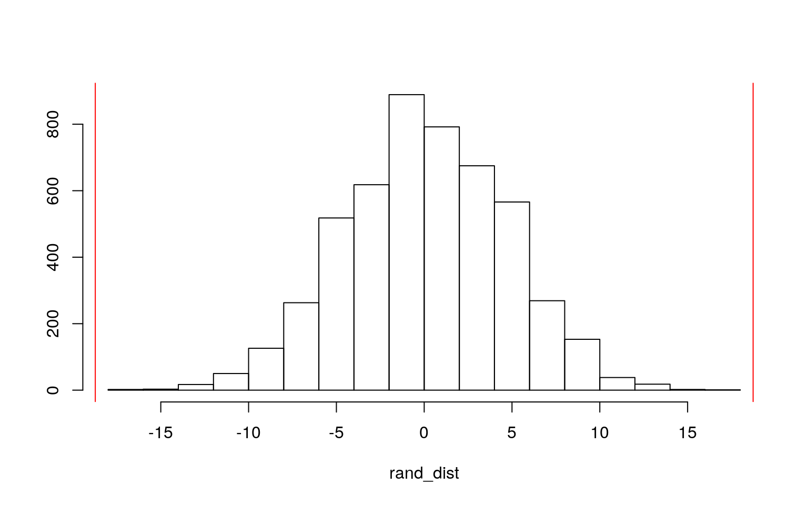
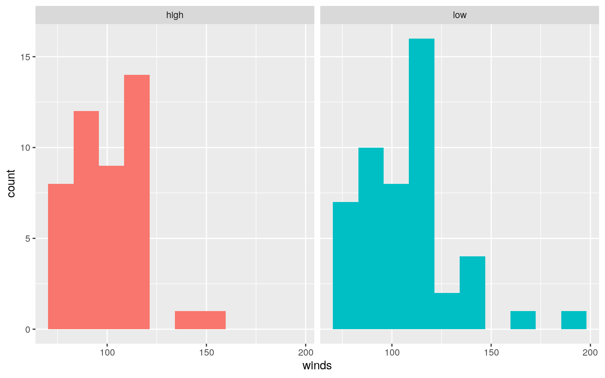
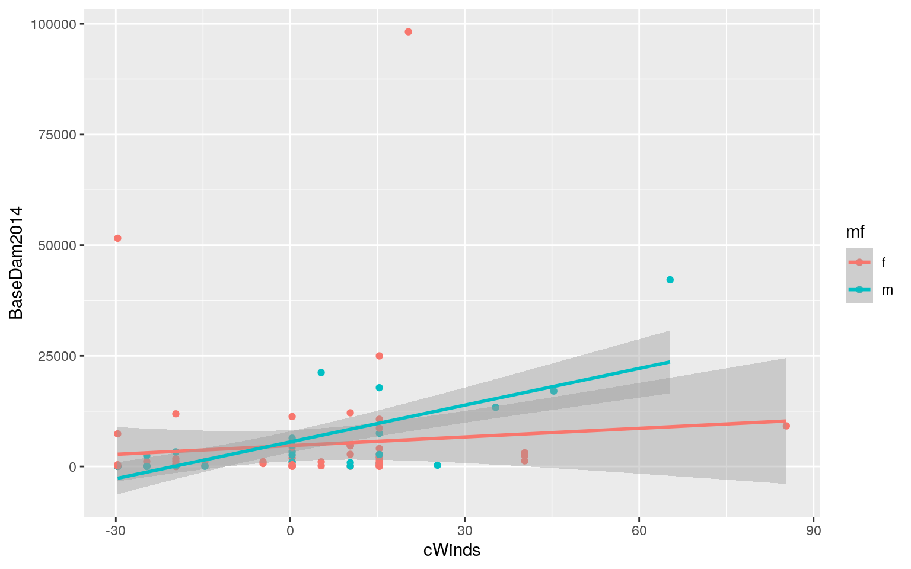
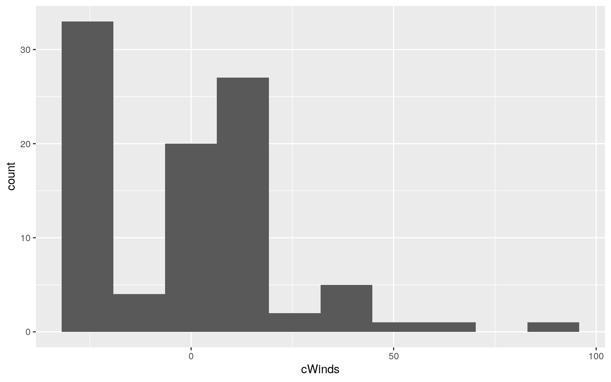
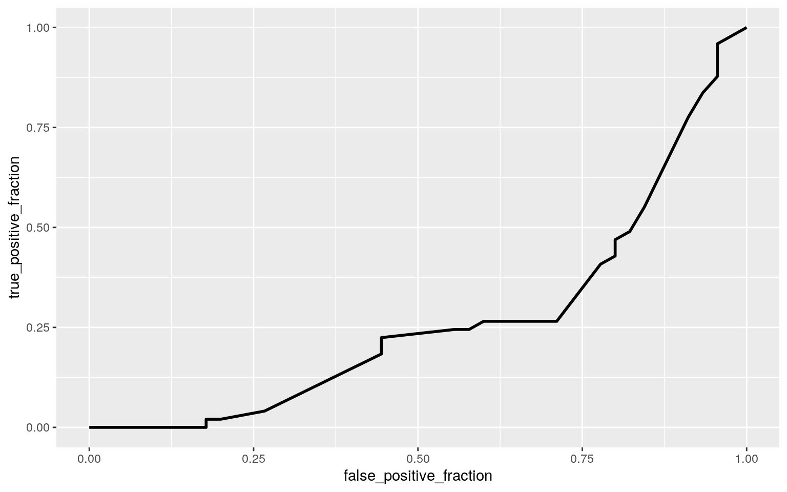
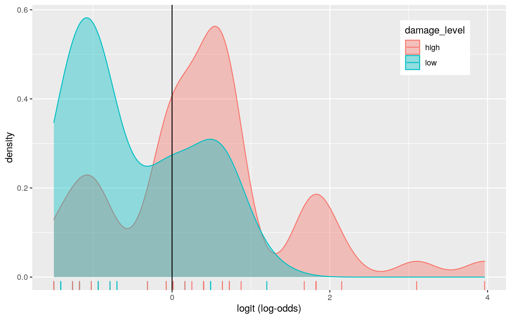

The dataset I chose includes information on named hurricanes in the Atlantic Ocean. I found this dataset interesting becuase it comes from a paper that claimed that hurricanes with female names were not taken as seriously and therefore caused more deaths and damage. The main variables include: Name, wind speed in MPH, atmospheric pressure at landfall in millibars, date of first landfall, property damage in millions of 2014 US dollars, deaths, and whether the hurricane had a male or female name. I created my own categorical variable by splitting the damage costs into two categories - high (more than 1B) and low (less than 100 M). There are 94 observations.
1. (15 pts) Perform a MANOVA testing whether any of your numeric variables (or a subset of them, if including them all is unreasonable or doesn’t make sense) show a mean difference across levels of one of your categorical variables (3). If they do, perform univariate ANOVAs to find response(s) showing a mean difference across groups (3), and perform post-hoc t tests to find which groups differ (3). Discuss the number of tests you have performed, calculate the probability of at least one type I error (if unadjusted), and adjust the significance level accordingly (bonferroni correction) before discussing significant differences (3). Briefly discuss some of the MANOVA assumptions and whether or not they are likely to have been met here (no need for anything too in-depth) (2).
#Data
library(readxl)
hurricNamed <- read_csv("hurricNamed.csv")
hurricane <- hurricNamed%>%select(-BaseDamage, -AffectedStates) %>% mutate(damage_level=case_when(BaseDam2014>1000 ~ "high", 1000>BaseDam2014 ~ "low")) %>% separate(firstLF, into=c("year", "month", "day"))
glimpse(hurricane)## Rows: 94
## Columns: 14
## $ Hurricane <chr> "Easy1950", "King1950", "Able1952",
"Barbara1953", "Florence1953", "Carol19…
## $ Name <chr> "Easy", "King", "Able", "Barbara",
"Florence", "Carol", "Edna", "Hazel", "C…
## $ Year <dbl> 1950, 1950, 1952, 1953, 1953, 1954, 1954,
1954, 1955, 1955, 1955, 1956, 195…
## $ LF.WindsMPH <dbl> 120, 130, 85, 85, 85, 120, 120, 145,
120, 85, 120, 105, 145, 120, 85, 120, …
## $ LF.PressureMB <dbl> 958, 955, 985, 987, 985, 960, 954,
938, 962, 987, 960, 975, 945, 946, 984, …
## $ LF.times <dbl> 1, 1, 1, 1, 1, 2, 1, 1, 1, 1, 1, 1, 1,
1, 1, 1, 3, 1, 1, 1, 1, 1, 1, 1, 2, …
## $ NDAM2014 <dbl> 1870, 6030, 170, 65, 18, 21375, 3520,
28500, 2270, 17250, 6990, 1730, 4290,…
## $ year <chr> "9", "10", "8", "8", "9", "8", "9", "10",
"8", "8", "9", "9", "6", "9", "7"…
## $ month <chr> "4", "17", "30", "13", "26", "30", "11",
"18", "12", "17", "19", "24", "27"…
## $ day <chr> "50", "50", "52", "53", "53", "54", "54",
"54", "55", "55", "55", "56", "57…
## $ deaths <dbl> 2, 4, 3, 1, 0, 60, 20, 20, 0, 200, 7, 15,
416, 1, 0, 22, 50, 0, 46, 3, 3, 5…
## $ mf <chr> "f", "m", "m", "f", "f", "f", "f", "f", "f",
"f", "m", "f", "f", "f", "f", …
## $ BaseDam2014 <dbl> 32.419419, 275.073859, 24.569434,
8.867416, 1.773483, 4050.686353, 352.0594…
## $ damage_level <chr> "low", "low", "low", "low", "low",
"high", "low", "high", "low", "high", "l…#MANOVA
man <- manova(cbind(LF.WindsMPH, LF.PressureMB, LF.times, BaseDam2014, NDAM2014, deaths)~damage_level,data=hurricane)
summary(man)## Df Pillai approx F num Df den Df Pr(>F)
## damage_level 1 0.45233 11.976 6 87 9.235e-10 ***
## Residuals 92
## ---
## Signif. codes: 0 '***' 0.001 '**' 0.01 '*' 0.05 '.' 0.1
' ' 1summary.aov(man)## Response LF.WindsMPH :
## Df Sum Sq Mean Sq F value Pr(>F)
## damage_level 1 8229 8229.3 19.532 2.7e-05 ***
## Residuals 92 38761 421.3
## ---
## Signif. codes: 0 '***' 0.001 '**' 0.01 '*' 0.05 '.' 0.1
' ' 1
##
## Response LF.PressureMB :
## Df Sum Sq Mean Sq F value Pr(>F)
## damage_level 1 12931 12931.1 50.995 2.11e-10 ***
## Residuals 92 23329 253.6
## ---
## Signif. codes: 0 '***' 0.001 '**' 0.01 '*' 0.05 '.' 0.1
' ' 1
##
## Response LF.times :
## Df Sum Sq Mean Sq F value Pr(>F)
## damage_level 1 1.4017 1.40165 12.506 0.0006375 ***
## Residuals 92 10.3111 0.11208
## ---
## Signif. codes: 0 '***' 0.001 '**' 0.01 '*' 0.05 '.' 0.1
' ' 1
##
## Response BaseDam2014 :
## Df Sum Sq Mean Sq F value Pr(>F)
## damage_level 1 2.1879e+09 2187870755 15.929 0.000132 ***
## Residuals 92 1.2636e+10 137348706
## ---
## Signif. codes: 0 '***' 0.001 '**' 0.01 '*' 0.05 '.' 0.1
' ' 1
##
## Response NDAM2014 :
## Df Sum Sq Mean Sq F value Pr(>F)
## damage_level 1 5.6573e+09 5657284923 32.168 1.62e-07 ***
## Residuals 92 1.6180e+10 175866066
## ---
## Signif. codes: 0 '***' 0.001 '**' 0.01 '*' 0.05 '.' 0.1
' ' 1
##
## Response deaths :
## Df Sum Sq Mean Sq F value Pr(>F)
## damage_level 1 161660 161660 4.3867 0.03897 *
## Residuals 92 3390393 36852
## ---
## Signif. codes: 0 '***' 0.001 '**' 0.01 '*' 0.05 '.' 0.1
' ' 1#ANOVA
summary(aov(LF.WindsMPH~damage_level,data=hurricane))## Df Sum Sq Mean Sq F value Pr(>F)
## damage_level 1 8229 8229 19.53 2.7e-05 ***
## Residuals 92 38761 421
## ---
## Signif. codes: 0 '***' 0.001 '**' 0.01 '*' 0.05 '.' 0.1
' ' 1summary(aov(LF.PressureMB~damage_level,data=hurricane))## Df Sum Sq Mean Sq F value Pr(>F)
## damage_level 1 12931 12931 50.99 2.11e-10 ***
## Residuals 92 23329 254
## ---
## Signif. codes: 0 '***' 0.001 '**' 0.01 '*' 0.05 '.' 0.1
' ' 1summary(aov(LF.times~damage_level,data=hurricane))## Df Sum Sq Mean Sq F value Pr(>F)
## damage_level 1 1.402 1.4017 12.51 0.000637 ***
## Residuals 92 10.311 0.1121
## ---
## Signif. codes: 0 '***' 0.001 '**' 0.01 '*' 0.05 '.' 0.1
' ' 1summary(aov(BaseDam2014~damage_level,data=hurricane))## Df Sum Sq Mean Sq F value Pr(>F)
## damage_level 1 2.188e+09 2.188e+09 15.93 0.000132 ***
## Residuals 92 1.264e+10 1.373e+08
## ---
## Signif. codes: 0 '***' 0.001 '**' 0.01 '*' 0.05 '.' 0.1
' ' 1summary(aov(NDAM2014~damage_level,data=hurricane))## Df Sum Sq Mean Sq F value Pr(>F)
## damage_level 1 5.657e+09 5.657e+09 32.17 1.62e-07 ***
## Residuals 92 1.618e+10 1.759e+08
## ---
## Signif. codes: 0 '***' 0.001 '**' 0.01 '*' 0.05 '.' 0.1
' ' 1#pairwise t-tests
pairwise.t.test(hurricane$LF.WindsMPH, hurricane$damage_level, p.adj = "none")##
## Pairwise comparisons using t tests with pooled SD
##
## data: hurricane$LF.WindsMPH and hurricane$damage_level
##
## high
## low 2.7e-05
##
## P value adjustment method: nonepairwise.t.test(hurricane$LF.PressureMB, hurricane$damage_level, p.adj = "none")##
## Pairwise comparisons using t tests with pooled SD
##
## data: hurricane$LF.PressureMB and hurricane$damage_level
##
## high
## low 2.1e-10
##
## P value adjustment method: nonepairwise.t.test(hurricane$LF.times, hurricane$damage_level, p.adj = "none")##
## Pairwise comparisons using t tests with pooled SD
##
## data: hurricane$LF.times and hurricane$damage_level
##
## high
## low 0.00064
##
## P value adjustment method: nonepairwise.t.test(hurricane$BaseDam2014, hurricane$damage_level, p.adj = "none")##
## Pairwise comparisons using t tests with pooled SD
##
## data: hurricane$BaseDam2014 and hurricane$damage_level
##
## high
## low 0.00013
##
## P value adjustment method: nonepairwise.t.test(hurricane$NDAM2014, hurricane$damage_level, p.adj = "none")##
## Pairwise comparisons using t tests with pooled SD
##
## data: hurricane$NDAM2014 and hurricane$damage_level
##
## high
## low 1.6e-07
##
## P value adjustment method: none#Type I Error
1 - (.95)^21## [1] 0.6594384#Bonferroni adjusted
.05/21## [1] 0.002380952After performing a MANOVA test, 5 of the variables were found to be significant - all of the numeric variables besides number of deaths. Then, a univariate ANOVA test was performed for each of the five significant variables to find the difference across the levels of damage. 21 tests were performed in total. The unadjusted type one error is 0.659, and after adjusting using Bonferroni correction the error is 0.00238.
One MANOVA assumption is that data are random samples and independent observations. Each observation was a different, named hurricane in the Atlantic so they are independent. They might not be a random sample though because it includes every named hurricane between 1950 and 2012. MANOVA also assumes multivariate normality, homogeneity, and linearity- the dependent variables most likely meet these assumption. One last assumption is that there should be no multicollinerity. I removed some variables that had the damage cost at the time versus now because they would be too correlated.
2. (10 pts) Perform some kind of randomization test on your data (that makes sense). The statistic can be anything you want (mean difference, correlation, F-statistic/ANOVA, chi-squared), etc. State null and alternative hypotheses, perform the test, and interpret the results (7). Create a plot visualizing the null distribution and the test statistic (3).
#mean difference for winds
hurricane%>%group_by(damage_level)%>%summarize(means=mean(LF.WindsMPH))%>%summarize("diff_means"=diff(means))## # A tibble: 1 x 1
## diff_means
## <dbl>
## 1 -18.7#randomization test for weight
rand_dist<-vector()
for(i in 1:5000){
new<-data.frame(damage=hurricane$damage_level, winds=sample(hurricane$LF.WindsMPH))
rand_dist[i]<-mean(new[new$damage=="high",]$winds)-
mean(new[new$damage=="low",]$winds)}
mean(rand_dist>18.73016 | rand_dist < -18.73016)## [1] 0hist(rand_dist,main="",ylab=""); abline(v = c(18.73016,-18.73016),col="red")
#plot
ggplot(new,aes(winds, fill=damage)) + geom_histogram(bins=10) + facet_wrap(~damage, ncol=2) + theme(legend.position = "none") The null hypothesis is that the wind speeds of the hurricane have no affect on the level of damage. The alternative hypothesis is that greater wind speeds will increase the level of damage (high vs low). The p-value is 0.0002 which is p<0.05, so the null hypothesis is rejected.The wind speeds for high damage and low damage differ. The mean difference is -18.73. The randomization test rejects the null hypothesis that wind speed has no effect of the damage level.
3. (40 pts) Build a linear regression model predicting one of your response variables from at least 2 other variables, including their interaction. Mean-center any numeric variables involved in the interaction.
- Interpret the coefficient estimates (do not discuss significance) (10)
- Plot the regression using `ggplot()` using geom_smooth(method="lm"). If your interaction is numeric by numeric, refer to code in the slides to make the plot or check out the `interactions` package, which makes this easier. If you have 3 or more predictors, just chose two of them to plot for convenience. (10)
- What proportion of the variation in the outcome does your model explain? (4)
- Check assumptions of linearity, normality, and homoskedasticity either graphically or using a hypothesis test (5)
- Regardless, recompute regression results with robust standard errors via `coeftest(..., vcov=vcovHC(...))`. Discuss significance of results, including any changes from before/after robust SEs if applicable. (10)#Centering Wind Speed
hurricane2 <- hurricane %>% mutate(cWinds=LF.WindsMPH - mean(LF.WindsMPH,na.rm=T))
#Linear Regression
fit<-lm(BaseDam2014~mf*cWinds, data=hurricane2)
summary(fit)##
## Call:
## lm(formula = BaseDam2014 ~ mf * cWinds, data =
hurricane2)
##
## Residuals:
## Min 1Q Median 3Q Max
## -12286 -4312 -2920 -56 92162
##
## Coefficients:
## Estimate Std. Error t value Pr(>|t|)
## (Intercept) 4706.08 1525.92 3.084 0.00271 **
## mfm 849.85 2706.60 0.314 0.75425
## cWinds 65.30 70.88 0.921 0.35938
## mfm:cWinds 211.37 116.94 1.807 0.07403 .
## ---
## Signif. codes: 0 '***' 0.001 '**' 0.01 '*' 0.05 '.' 0.1
' ' 1
##
## Residual standard error: 12190 on 90 degrees of freedom
## Multiple R-squared: 0.09731, Adjusted R-squared: 0.06722
## F-statistic: 3.234 on 3 and 90 DF, p-value: 0.02598#Graph
ggplot(hurricane2, aes(y=BaseDam2014, x=cWinds, color=mf)) + geom_point() + geom_smooth(method="lm")
#Checking assumptions
library(lmtest)
library(sandwich)
bptest(fit)##
## studentized Breusch-Pagan test
##
## data: fit
## BP = 1.0801, df = 3, p-value = 0.7819ggplot(fit,aes(cWinds, fill=BaseDam2014)) + geom_histogram(bins=10)
#Regression with robust SE
coeftest(fit,vcov=vcovHC(fit))##
## t test of coefficients:
##
## Estimate Std. Error t value Pr(>|t|)
## (Intercept) 4706.077 1757.665 2.6775 0.008817 **
## mfm 849.852 2320.496 0.3662 0.715048
## cWinds 65.300 84.931 0.7689 0.443986
## mfm:cWinds 211.367 137.783 1.5341 0.128523
## ---
## Signif. codes: 0 '***' 0.001 '**' 0.01 '*' 0.05 '.' 0.1
' ' 1The intercept is the predicted average cost of damage for female named hurricanes with average wind speeds, which is $4.706 B. The damage cost of male named hurricanes with average wind speeds have $2849.85 M more in damage than female named hurricanes. For every one MPH increase in wind speed, the damage cost of female named hurricanes increases by $65.30 M. For every one MPH increase in wind speed for male named hurricanes, the damage cost increases by $211.37 M.
The multiple R-squared is 0.09731, and the adjusted R-squared is 0.06722. This is the proportion of the variation of damage amount explained by the model.
The scatter plot shows that there is a linear relationship between the dependent variable, damage cost, and the independent variables, wind speed and male/female name. Normality was checked by eyeing a histogram, and this assumption was not met. homoskedasticity was checked using bptest. The null hypothesis was not rejected because the p-value was 0.78, p>0.05, therefore the data is homoskedastic.
Regression results with robust SEs differs from the results without robust SEs. With robust SEs, the SE of the intercept increased, the SE of the slope of male named hurricanes decreased, the SE of the slope of wind speed increased, and the SE of the slope of wind speed on damage cost for male named hurricanes increased. The p-values also changed with robust SEs. The p-values decreased for the intercept and all slopes except the slope for male named hurricanes, which decreased.
4. (5 pts) Rerun same regression model (with the interaction), but this time compute bootstrapped standard errors (either by resampling observations or residuals). Discuss any changes you observe in SEs and p-values using these SEs compared to the original SEs and the robust SEs)
#Bootstrapping by resampling residuals
fit <- lm(BaseDam2014~mf*cWinds, data=hurricane2)
resids<-fit$residuals
fitted<-fit$fitted.values
resid_resamp<-replicate(5000,{
new_resids<-sample(resids,replace=TRUE)
hurricane2$new_y<-fitted+new_resids
fit<-lm(new_y~cWinds+mf,data=hurricane2)
coef(fit)
})
resid_resamp%>%t%>%as.data.frame%>%summarize_all(sd) ## (Intercept) cWinds mfm
## 1 1495.065 54.35595 2665.233Compared to the original SE’s the bootstrapped SE’s are lower for wind speed and a male gender name. Compared to the robust SE’s, the bootstrapped SE’s are lower for wind speed, but higher for male gender name.
5. (30 pts) Fit a logistic regression model predicting a binary variable (if you don’t have one, make/get one) from at least two explanatory variables (interaction not necessary).
- Interpret coefficient estimates in context (10)
- Report a confusion matrix for your logistic regression (5)
- Compute and discuss the Accuracy, Sensitivity (TPR), Specificity (TNR), Precision (PPV), and AUC of your model (5)
- Using ggplot, make a density plot of the log-odds (logit) colored/grouped by your binary outcome variable (5)
- Generate an ROC curve (plot) and calculate AUC (either manually or with a package); interpret (5)library(tidyverse)
library(lmtest)
#Dummy code
hurricane2<-hurricane2%>%mutate(y=ifelse(damage_level=="high",1,0))
head(hurricane2)## # A tibble: 6 x 16
## Hurricane Name Year LF.WindsMPH LF.PressureMB LF.times
NDAM2014 year month day deaths mf
## <chr> <chr> <dbl> <dbl> <dbl> <dbl> <dbl> <chr> <chr>
<chr> <dbl> <chr>
## 1 Easy1950 Easy 1950 120 958 1 1870 9 4 50 2 f
## 2 King1950 King 1950 130 955 1 6030 10 17 50 4 m
## 3 Able1952 Able 1952 85 985 1 170 8 30 52 3 m
## 4 Barbara1… Barb… 1953 85 987 1 65 8 13 53 1 f
## 5 Florence… Flor… 1953 85 985 1 18 9 26 53 0 f
## 6 Carol1954 Carol 1954 120 960 2 21375 8 30 54 60 f
## # … with 4 more variables: BaseDam2014 <dbl>,
damage_level <chr>, cWinds <dbl>, y <dbl>#Logistic Regression
logfit<-glm(y~cWinds + mf, data=hurricane2, family="binomial")
coeftest(logfit)##
## z test of coefficients:
##
## Estimate Std. Error z value Pr(>|z|)
## (Intercept) -0.089322 0.274376 -0.3255 0.7447676
## cWinds 0.047487 0.012716 3.7345 0.0001881 ***
## mfm 0.088070 0.497533 0.1770 0.8594984
## ---
## Signif. codes: 0 '***' 0.001 '**' 0.01 '*' 0.05 '.' 0.1
' ' 1#odds of high damage level
1*10^-0.089322## [1] 0.8141005#increase in odds of high damage level from wind speed
1*10^0.047487## [1] 1.115545#increase in odds of high damage level from male name
1*10^0.088070## [1] 1.224814#Confusion Matrix
prob <- predict(logfit, type="response")
table(predict = as.numeric(prob > .5), truth = hurricane2$y) %>% addmargins## truth
## predict 0 1 Sum
## 0 36 13 49
## 1 13 32 45
## Sum 49 45 94#accuracy
(36+32)/94## [1] 0.7234043#sensitivity
36/49## [1] 0.7346939#specificity
32/45## [1] 0.7111111#precision
36/49## [1] 0.7346939#AUC and ROC plot
library(plotROC)
ROCplot<-ggplot(hurricane2)+geom_roc(aes(d=damage_level,m=prob), n.cuts=0)
ROCplot
calc_auc(ROCplot)## PANEL group AUC
## 1 1 -1 0.2678005#Density plot
hurricane2$logit<-predict(logfit,type="link")
hurricane2%>%ggplot()+geom_density(aes(logit,color=damage_level,fill=damage_level), alpha=.4)+
theme(legend.position=c(.85,.85))+geom_vline(xintercept=0)+xlab("logit (log-odds)")+
geom_rug(aes(logit,color=damage_level)) For female named hurricane and wind speed = 0, the log-odds is -0.089, the odds of high damage level is e^-0.089=0.814. When the wind speed increases by one MPH, the odds are multiplied by e^0.0475=1.1155. The odds of high damage level increase by 11.55%. When the hurricane has a male name the odds are multiplied by e^0.0881=1.2248. The odds of a high damage leel increase by 22.48%.
The accuracy is the proportion classified as correct, which was 0.723. The sensitivity is the proportion of high damage level classified correctly, which was 0.734. The specificity is the proportion of low damage level classified as correct, which was 0.711. The precision is propotion of high damage levels that were, which was 0.735.
An ROC plot was generated, using actual damage level and predicted damage level. The ROC graph shows that wind speed and gender of name were bad predictors of damage level. Normally, if there is are good predictors, it curves the other direction toward the top left corner rather than the bottom right corner. The AUC was calculated to be 0.2678. This is a very bad AUC. The graph looks this way because the AUC is extremely low, therefore very bad.
6. (25 pts) Perform a logistic regression predicting the same binary response variable from ALL of the rest of your variables (the more, the better!)
- Fit model, compute in-sample classification diagnostics (Accuracy, Sensitivity, Specificity, Precision, AUC), and interpret (5)
- Perform 10-fold (or repeated random sub-sampling) CV with the same model and report average out-of-sample classification diagnostics (Accuracy, Sensitivity, Specificity, Precision, and AUC); interpret AUC and compare with the in-sample metrics (10)
- Perform LASSO on the same model/variables. Choose lambda to give the simplest model whose accuracy is near that of the best (i.e., `lambda.1se`). Discuss which variables are retained. (5)
- Perform 10-fold CV using only the variables lasso selected: compare model's out-of-sample AUC to that of your logistic regressions above (5)class_diag<-function(probs,truth){
tab<-table(factor(probs>.5,levels=c("FALSE","TRUE")),truth)
acc=sum(diag(tab))/sum(tab)
sens=tab[2,2]/colSums(tab)[2]
spec=tab[1,1]/colSums(tab)[1]
ppv=tab[2,2]/rowSums(tab)[2]
if(is.numeric(truth)==FALSE & is.logical(truth)==FALSE) truth<-as.numeric(truth)-1
#CALCULATE EXACT AUC
ord<-order(probs, decreasing=TRUE)
probs <- probs[ord]; truth <- truth[ord]
TPR=cumsum(truth)/max(1,sum(truth))
FPR=cumsum(!truth)/max(1,sum(!truth))
dup<-c(probs[-1]>=probs[-length(probs)], FALSE)
TPR<-c(0,TPR[!dup],1); FPR<-c(0,FPR[!dup],1)
n <- length(TPR)
auc<- sum( ((TPR[-1]+TPR[-n])/2) * (FPR[-1]-FPR[-n]) )
data.frame(acc,sens,spec,ppv,auc)
}
class_diag(prob,hurricane2$y)## acc sens spec ppv auc
## 1 0.7234043 0.7111111 0.7346939 0.7111111 0.7321995#k-fold CV
hurricane3<-hurricane2%>%select(-Hurricane,-Name,-Year,-year,-day,-month,-damage_level,-logit,-BaseDam2014,-NDAM2014)%>%na.omit #I had to keep removing variables because running it with these caused an error code, but when I removed them all it ran
set.seed(1234)
k=10
data<-hurricane3[sample(nrow(hurricane3)),]
folds<-cut(seq(1:nrow(data)),breaks=k,labels=F)
diags<-NULL
for(i in 1:k){
train<-data[folds!=i,]
test<-data[folds==i,]
truth<-test$y
fit<-glm(y~.,data=train,family="binomial")
probs<-predict(fit,newdata = test,type="response")
diags<-rbind(diags,class_diag(probs,truth))
}
summarize_all(diags,mean) #average diagnostics across all k folds## acc sens spec ppv auc
## 1 0.8266667 0.8416667 0.8416667 0.8316667 0.9246111# LASSO
library(glmnet)
set.seed(1234)
y <- as.matrix(hurricane3$y)
x <- model.matrix(y~., data = hurricane3)[,-1]
x<- scale(x)
cv <- cv.glmnet(x, y, family = "binomial")
lasso <- glmnet(x, y, family = "binomial", lambda = cv$lambda.1se)
coef(lasso)## 7 x 1 sparse Matrix of class "dgCMatrix"
## s0
## (Intercept) 0.1578089
## LF.WindsMPH .
## LF.PressureMB -1.7745697
## LF.times 1.0210990
## deaths 1.1395483
## mfm .
## cWinds -0.3632527#k-fold with LASSO variables
lasso_data <- hurricane3%>%select(LF.PressureMB, LF.times, deaths, mf, y)
set.seed(1234)
k=10
data <- lasso_data[sample(nrow(lasso_data)),]
folds <- cut(seq(1:nrow(lasso_data)),breaks=k,labels=F)
diags<-NULL
for(i in 1:k){
train<-data[folds!=i,]
test<-data[folds==i,]
truth<-test$y
fit<-glm(y~(.)^2, data=lasso_data, family="binomial")
probs<-predict(fit,newdata = test,type="response")
diags<-rbind(diags,class_diag(probs,truth))
}
summarize_all(diags,mean)## acc sens spec ppv auc
## 1 0.84 0.8183333 0.8666667 0.85 0.9383333I ran class_diag on hurricane 2 datatset: the accuracy is 0.7234043, the sensitivity is 0.7111111, the specificity is 0.7346939, the precision is 0.7111111, and the AUC is 0.7321995. The AUC shows the variables are a fair predictor of damage level.
A k-fold CV was attempted to be performed on the logistic regression to predict damage level using all of the variables in hurricane2. However, several error codes were received so I removed many of the categorical variables, such as hurricane, name, year, month, day, and saved as a new dataset, hurricane3. I also removed NDAM2014 and BaseDam2014 because they were used to make the binomial variable. After this, the k-fold test was performed. The new acc was 0.925, sens was 0.841, spec was 0.842, ppv was 0.832, and auc was 0.925, which is extremely high, therefore, a great predictor. The class_diag gave back only “fair” results. The out of sample AUC actually increased compared to the original AUC.
When LASSO was run, atmospheric pressure, land fall times, deaths, and Winds (centered) was retained. (Side note: The gender of name of the hurricane was not retained, which I find interesting because the claim of the paper where this data came from was that hurricanes with female names were taken less seriously and therefore caused more damage.) I ran another k-fold CV with only the variables retained from LASSO. The acc was 0.84, sens was 0.818, spec was 0.867, ppv was 0.85, and auc was 0.938. The AUC increased, which makes sense because LASSO retains the variables that are the strongest predictors.
Note that the echo = FALSE parameter was added to the code chunk to prevent printing of the R code that generated the plot.